Generated 2026-05-26T22:32:04.221Z
t3code-style-audit
Project: /home/ubuntu/github/t3code
noVNC: http://127.0.0.1:6081/vnc.html
Artifacts: /home/ubuntu/github/t3code/.proof-artifacts/sessions/t3code-style-audit
Summary
Status
stopped
8 min 30 s
Screenshots
15
after-full-final.png
Recordings
0
none
Failures
0
Last event: stop
Screenshots
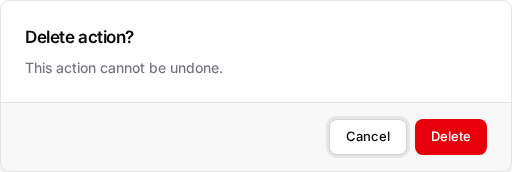
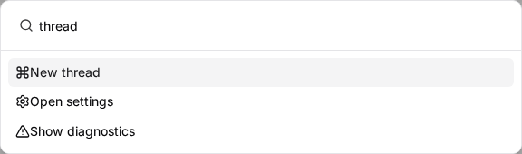
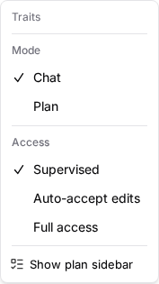


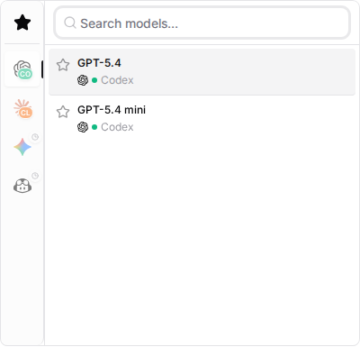
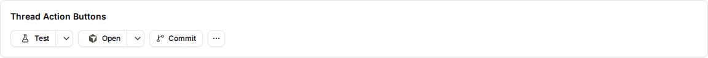
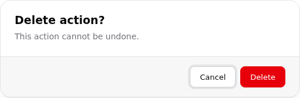
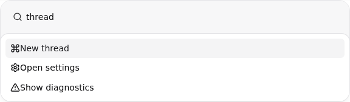
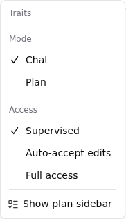
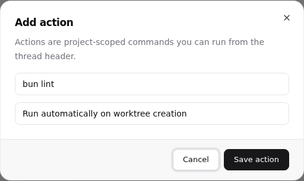

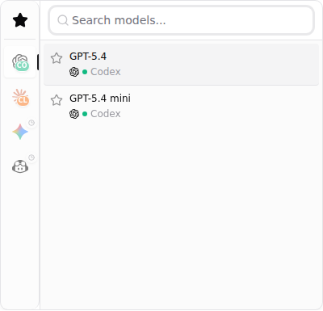
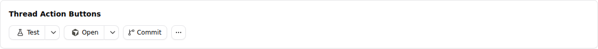
Recordings
No recordings captured.
Timeline
- start 2026-05-26T22:23:22.450Z
{"type":"start","at":"2026-05-26T22:23:22.450Z","container":"proof-artifacts-t3code-style-audit","image":"proof-artifacts/desktop:0.1.0","imageSource":"local","noVncPort":6081} - novnc-ready 2026-05-26T22:23:22.775Z
{"type":"novnc-ready","at":"2026-05-26T22:23:22.775Z","url":"http://127.0.0.1:6081/vnc.html"} - open 2026-05-26T22:23:41.307Z
{"type":"open","at":"2026-05-26T22:23:41.307Z","url":"http://127.0.0.1:5174/style-audit.html","fullscreen":true} - screenshot 2026-05-26T22:23:42.642Z
{"type":"screenshot","at":"2026-05-26T22:23:42.642Z","label":"before-full","file":"/home/ubuntu/github/t3code/.proof-artifacts/sessions/t3code-style-audit/screenshots/before-full.png"} - open 2026-05-26T22:24:39.756Z
{"type":"open","at":"2026-05-26T22:24:39.756Z","url":"http://127.0.0.1:5173/style-audit.html","fullscreen":true} - screenshot 2026-05-26T22:24:40.477Z
{"type":"screenshot","at":"2026-05-26T22:24:40.477Z","label":"after-full","file":"/home/ubuntu/github/t3code/.proof-artifacts/sessions/t3code-style-audit/screenshots/after-full.png"} - open 2026-05-26T22:28:13.156Z
{"type":"open","at":"2026-05-26T22:28:13.156Z","url":"http://127.0.0.1:5173/style-audit.html","fullscreen":true} - screenshot 2026-05-26T22:28:13.834Z
{"type":"screenshot","at":"2026-05-26T22:28:13.834Z","label":"after-full-final","file":"/home/ubuntu/github/t3code/.proof-artifacts/sessions/t3code-style-audit/screenshots/after-full-final.png"} - stop 2026-05-26T22:31:52.738Z
{"type":"stop","at":"2026-05-26T22:31:52.738Z","container":"proof-artifacts-t3code-style-audit"}
Logs
No logs captured.
Manifest
{
"schemaVersion": 1,
"events": [
{
"type": "start",
"at": "2026-05-26T22:23:22.450Z",
"container": "proof-artifacts-t3code-style-audit",
"image": "proof-artifacts/desktop:0.1.0",
"imageSource": "local",
"noVncPort": 6081
},
{
"type": "novnc-ready",
"at": "2026-05-26T22:23:22.775Z",
"url": "http://127.0.0.1:6081/vnc.html"
},
{
"type": "open",
"at": "2026-05-26T22:23:41.307Z",
"url": "http://127.0.0.1:5174/style-audit.html",
"fullscreen": true
},
{
"type": "screenshot",
"at": "2026-05-26T22:23:42.642Z",
"label": "before-full",
"file": "/home/ubuntu/github/t3code/.proof-artifacts/sessions/t3code-style-audit/screenshots/before-full.png"
},
{
"type": "open",
"at": "2026-05-26T22:24:39.756Z",
"url": "http://127.0.0.1:5173/style-audit.html",
"fullscreen": true
},
{
"type": "screenshot",
"at": "2026-05-26T22:24:40.477Z",
"label": "after-full",
"file": "/home/ubuntu/github/t3code/.proof-artifacts/sessions/t3code-style-audit/screenshots/after-full.png"
},
{
"type": "open",
"at": "2026-05-26T22:28:13.156Z",
"url": "http://127.0.0.1:5173/style-audit.html",
"fullscreen": true
},
{
"type": "screenshot",
"at": "2026-05-26T22:28:13.834Z",
"label": "after-full-final",
"file": "/home/ubuntu/github/t3code/.proof-artifacts/sessions/t3code-style-audit/screenshots/after-full-final.png"
},
{
"type": "stop",
"at": "2026-05-26T22:31:52.738Z",
"container": "proof-artifacts-t3code-style-audit"
}
],
"screenshots": [
{
"label": "before-full",
"file": "/home/ubuntu/github/t3code/.proof-artifacts/sessions/t3code-style-audit/screenshots/before-full.png",
"capturedAt": "2026-05-26T22:23:42.642Z"
},
{
"label": "after-full",
"file": "/home/ubuntu/github/t3code/.proof-artifacts/sessions/t3code-style-audit/screenshots/after-full.png",
"capturedAt": "2026-05-26T22:24:40.475Z"
},
{
"label": "after-full-final",
"file": "/home/ubuntu/github/t3code/.proof-artifacts/sessions/t3code-style-audit/screenshots/after-full-final.png",
"capturedAt": "2026-05-26T22:28:13.834Z"
}
],
"recordings": [],
"name": "t3code-style-audit",
"width": "1280",
"height": "800",
"project": "/home/ubuntu/github/t3code",
"artifacts": "/home/ubuntu/github/t3code/.proof-artifacts/sessions/t3code-style-audit",
"noVncUrl": "http://127.0.0.1:6081/vnc.html",
"noVncPort": 6081,
"noVncListen": "127.0.0.1",
"network": "host",
"targetUrl": "http://127.0.0.1:5173/style-audit.html",
"networkInferredFromUrl": true,
"browserFullscreen": true,
"vncPort": 5901,
"container": "proof-artifacts-t3code-style-audit",
"containerUser": "1001:1001",
"image": "proof-artifacts/desktop:0.1.0",
"imageId": "sha256:6785bf31c1950a4f9839eec9f077eb8de1422e17dfb9cfd723de7a1f567fbad5",
"requestedImage": "proof-artifacts/desktop:0.1.0",
"imageSource": "local",
"startedAt": "2026-05-26T22:23:22.446Z",
"stoppedAt": "2026-05-26T22:31:52.738Z"
}